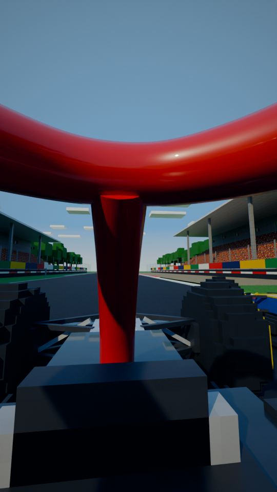
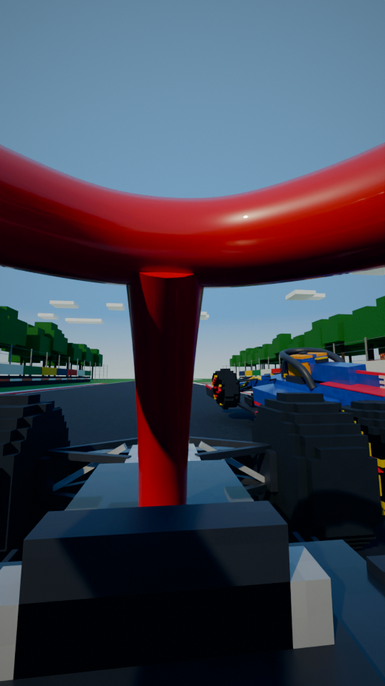

definitely saved his
2352.62–55.81s · 3.2s
“team boss said it had definitely saved his life.”
The team garage on race day: Wolff on the radio, crew at the screens.
collision check: clean

Toto Wolff
2455.81–57.79s · 2.0s
“That boss was Toto Wolff.”
Back on the launch stage, front on: Wolff, chainsaw lowered, a grin.
collision check: clean

So next time
a
ugly
b2557.79–60.00s · 2.2s
“So next time you call it ugly, just...”
POV again, Hamilton's eyes: braking for the chicane, Verstappen alongside on the right - his wheels hit the yellow kerb. Loops to shot 1.
collision check: clean